A second internet provider
R1 is still the only way out to the internet. A second, separate provider would remove that single point of failure.
School projectIndividual work
ET0010 Computer Networking · Mini project
The network for a company with a main office and two branch offices, designed and built on my own in Cisco Packet Tracer: the address plan, the routing between sites, backup links and a firewall.
For my Computer Networking module, I had to design and build the network for ABC Pte Ltd, a pretend IT company. Its main office has the Admin team and the company's web and file servers. Two branch offices, Engineering and Sales, connect to it over a long-distance link, and the main office connects to the internet through an internet provider.
This was individual work, so I did everything: planning the addresses, setting up all 7 routers, adding backups so one failure doesn't take the company offline, adding a firewall, and testing it all. I built it in Cisco Packet Tracer, which simulates real Cisco equipment.
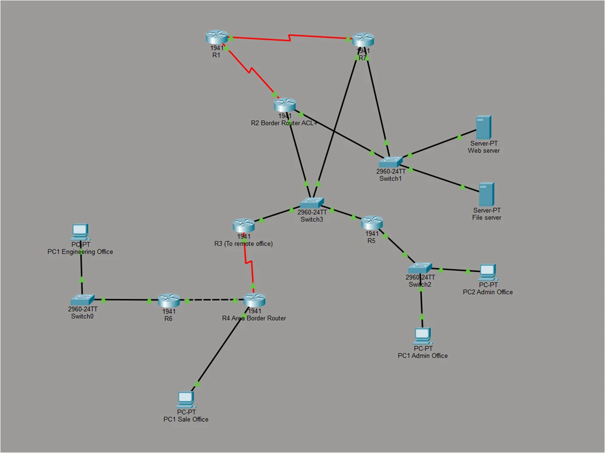
Every device needs an address, like a phone number. The company gave me one block of 256 addresses, and expects each office to double in size over the next 5–10 years.
I split the block into right-sized pieces (VLSM), each big enough for twice today's staff. The whole network uses 184 of the 256 addresses, so the rest stay free for later.
| Network | Addresses needed | Size given |
|---|---|---|
| Admin office | 56 (28 staff, doubled) | 62 |
| Engineering office | 46 (23 staff, doubled) | 62 |
| Sales office | 22 (11 staff, doubled) | 30 |
| Servers | 5 (fixed maximum) | 6 |
| Main office routers | 4 | 6 |
| Link R3 to R4 | 2 | 2 |
| Link R4 to R6 | 2 | 2 |
Taken from the block 198.100.190.0/24, largest network first.
The internet provider's router (R1) shouldn't learn the company's internal routes, so I set two fixed directions by hand:
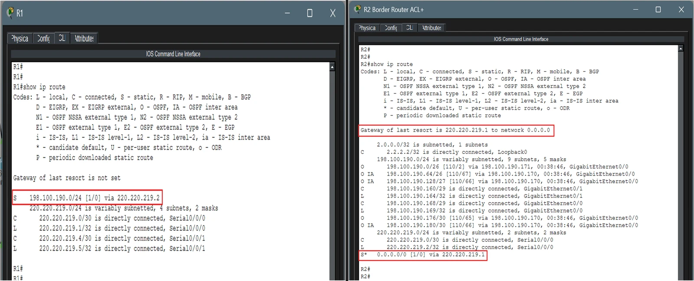
Inside the company, the routers find paths to each other automatically using OSPF, a routing protocol. I split the network into three areas: the main office (Area 0) and one for each branch (Areas 1 and 2). A change inside one branch then stays inside that branch.
R4 sits on the edge of all three areas and passes routes between them. I also stopped routing messages being sent out towards office PCs, since only routers need them.
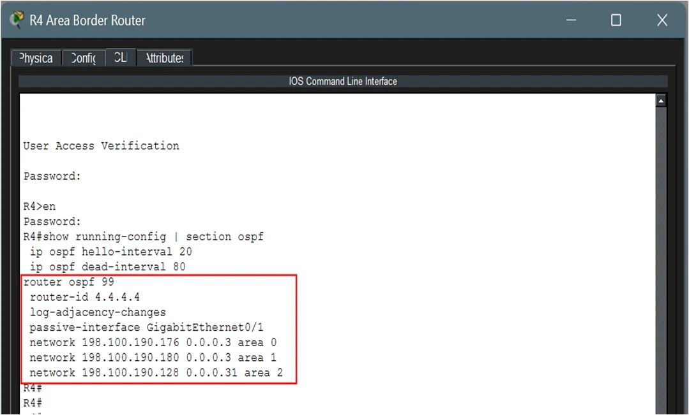
Four routers share the main office network. Rather than every router swapping updates with every other, OSPF picks one leader to collect and share them (the designated router), plus a backup.
I set priorities so the choice is fixed: R2 is the leader and R5 is its backup.
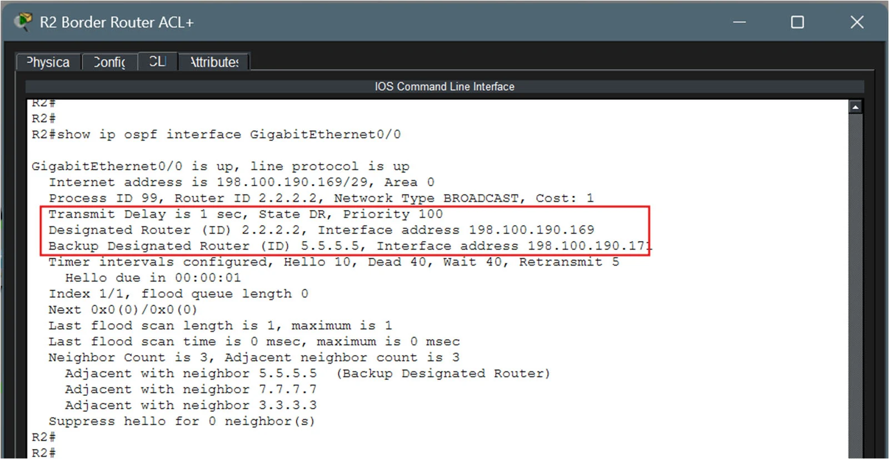
Routers send each other a regular "hello" to show they're still alive. On the slower serial link to the branches, I spaced these out to every 20 seconds, and a router is only treated as down after 80 seconds of silence. This means less chatter on a slow line.
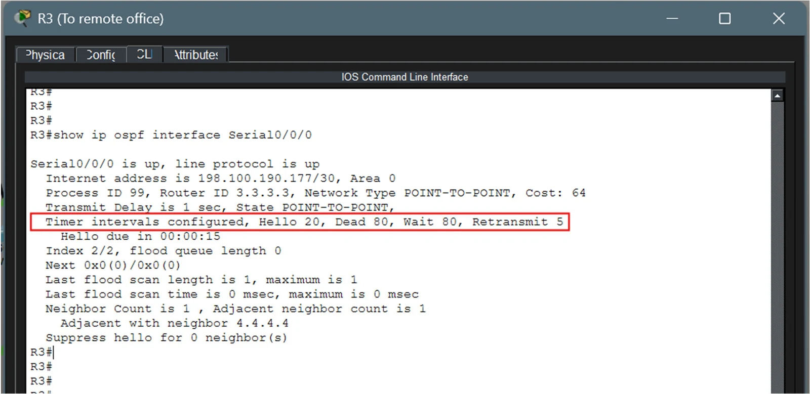
If R2 fails, the company would lose the internet. I added a second border router, R7, with its own link to the internet provider. R7 tells the other routers "you can reach the internet through me too", so traffic switches to it on its own.
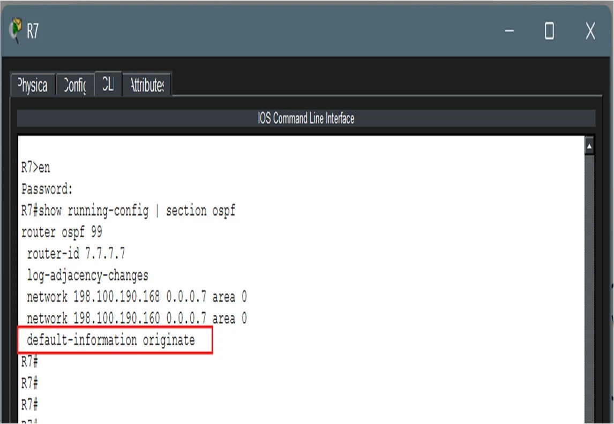
The web and file servers send all their traffic through one gateway address. R2 and R7 share that address using HSRP. R2 normally handles it, and R7 waits on standby. If R2 goes down, R7 takes over the same address, so the servers don't need any changes.
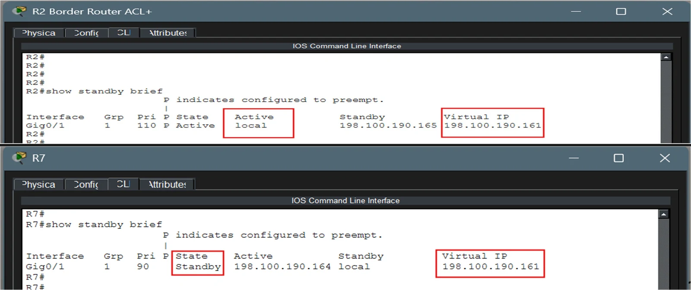
R2 checks every message coming in from the internet against a list of rules (an access control list):
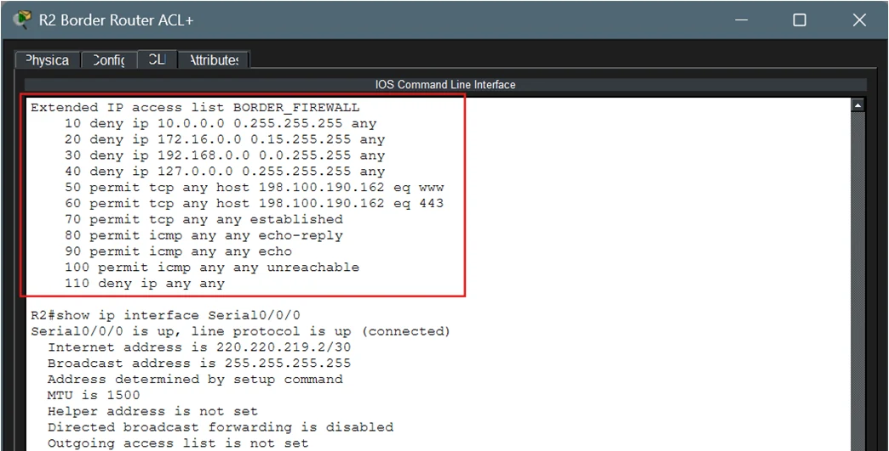
From a PC in the Admin office, I sent test messages (pings) to the Engineering office, the Sales office and the web server. Every message got a reply, with none lost.
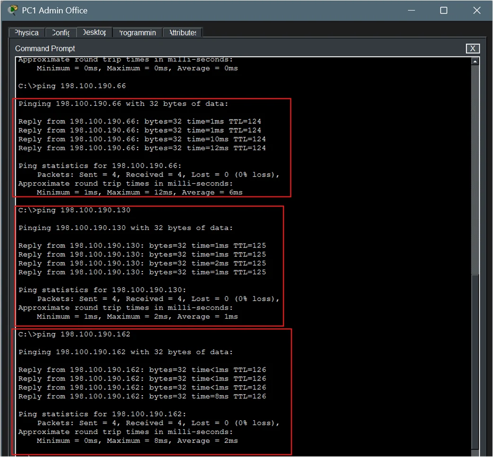
A backup only counts if it works, so I turned R2 off in the simulator and tested again. The offices could still reach each other, and the internet provider's router was still reachable through the backup router, R7.
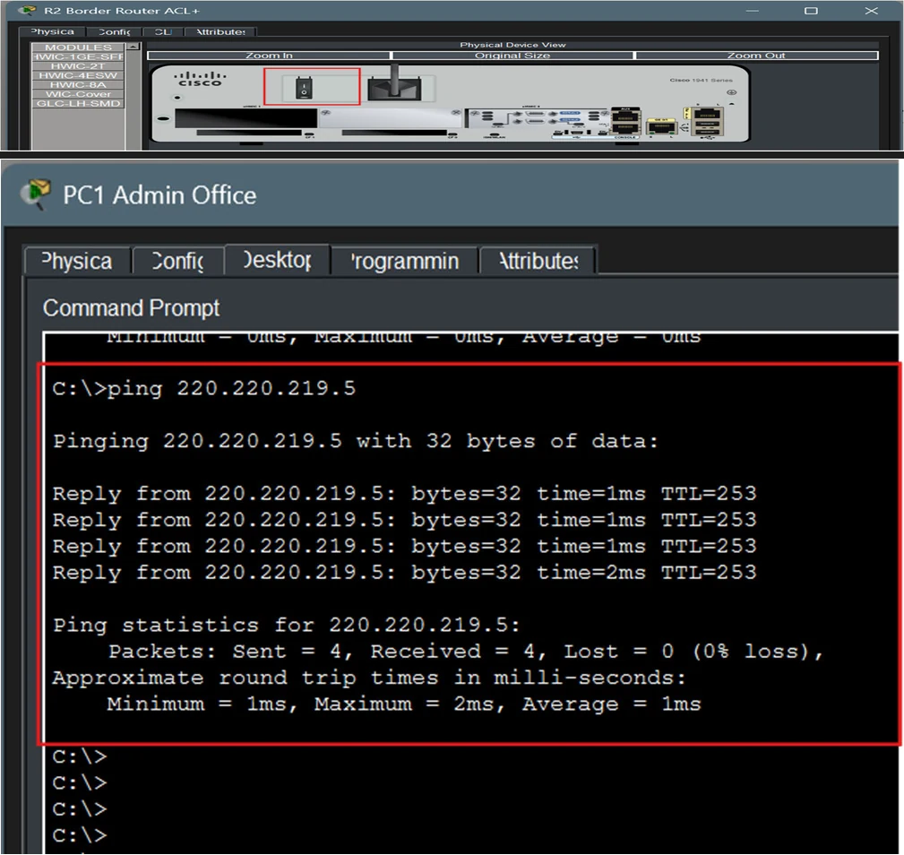
I also estimated the cost of building it for real: about S$22,780, mostly the 7 routers and the 2 servers.
| Item | Qty | Cost (S$) |
|---|---|---|
| Cisco 1941 routers | 7 | 10,500 |
| Cisco 2960 switches | 5 | 3,500 |
| Rack servers (web, file) | 2 | 5,000 |
| Internet lines (main + backup) | 2 | 1,200 |
| Cables | — | 580 |
| Installation and testing | 1 | 2,000 |
| Total | 22,780 |
R1 is still the only way out to the internet. A second, separate provider would remove that single point of failure.
HSRP only protects the servers today. Adding it for the Admin, Sales and Engineering offices would protect everyone.
Encrypted remote logins (SSH instead of Telnet), passwords on routing messages, and locking switch ports to known devices.
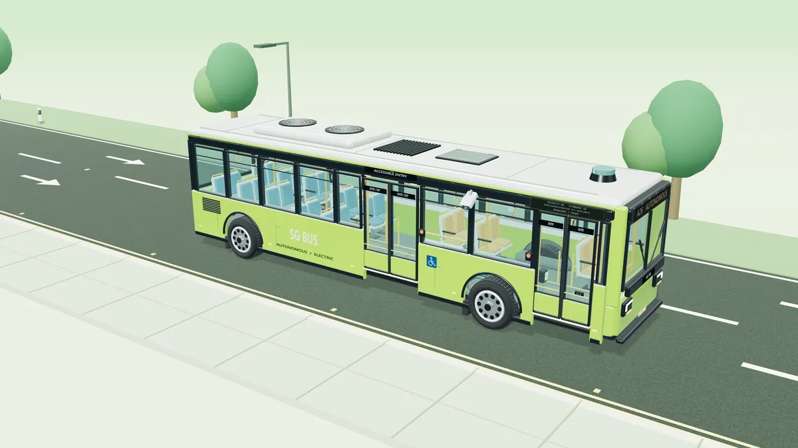